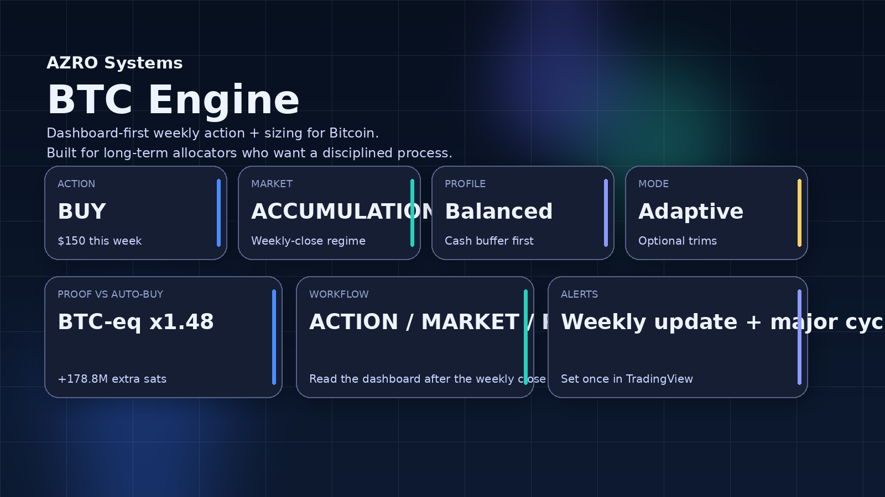

Two systems. One rules-first mindset.
AZRO Systems builds proof-first TradingView workflows that reduce noise, support a written plan, and keep weekly decisions calm enough to follow.
Map the cycle. Cut the noise.
BTC Engine turns Bitcoin volatility into a repeatable weekly allocation process: one clear action, one suggested amount, and a dashboard built to keep execution calm.
- BUY / TRIM (optional) / HOLD + suggested amount
- Dashboard-first and built for serious operators
- Non-custodial, with proof vs auto-buy built in

BTC Engine glossary
What each dashboard output means, and how it fits into a repeatable Bitcoin allocation process.
ACTION + suggested amount
Use this as the weekly anchor. The point is to remove negotiation and make the process easier to follow when volatility picks up.
Market context
Context helps you understand whether conditions are calmer, richer, or riskier without pretending to forecast every move.
Modes + risk profiles
Stack, Adaptive, Event, and Performance change how optional trims are handled. Conservative, Balanced, and Aggressive shape cash deployment and pacing.
Proof vs auto-buy
These proof metrics compare the workflow to a simple auto-buy baseline so you can audit whether the process is actually adding value over time.
Alerts (optional)
Alerts are there to support the routine — not create urgency. Set them so the dashboard comes to you at the moments that matter.
Spot market tops and bottoms with confidence.
The XRP Top/Bottom Detector helps you confirm cycle tops, bottoms, and risk conditions through readable on-chart labels, optional context, and TradingView alerts.
- MAJOR / RADAR / LIGHT / EARLY label workflow
- Optional context overlays and risk markers
- Alert-ready for a disciplined weekly-close routine

Label glossary (XRP)
What each label means, and how it fits into a weekly-close workflow.
MAJOR TOP / MAJOR BOTTOM
Use MAJOR labels as the clearest confirmation moments in the workflow. They are there to support action — not prediction.
RADAR TOP / RADAR BOTTOM
RADAR adds structure around the bigger turns. It helps you stay systematic without creating unnecessary urgency.
LIGHT TOP / LIGHT BOTTOM
LIGHT labels add optional context between major turns. Leave them on for more texture or turn them off for a cleaner chart.
EARLY TOP / EARLY BOTTOM
EARLY labels are for awareness during the week. Use them as context, not as a replacement for weekly-close confirmations.
Risk triangles + context overlays
Risk markers and overlays help frame the environment so you can keep the chart informative without letting it become noisy.
Ready to compare the workflows?
Open pricing when you’re ready to choose BTC, XRP, or the bundle — or use the free trial first if you want to validate the workflow on your own chart.